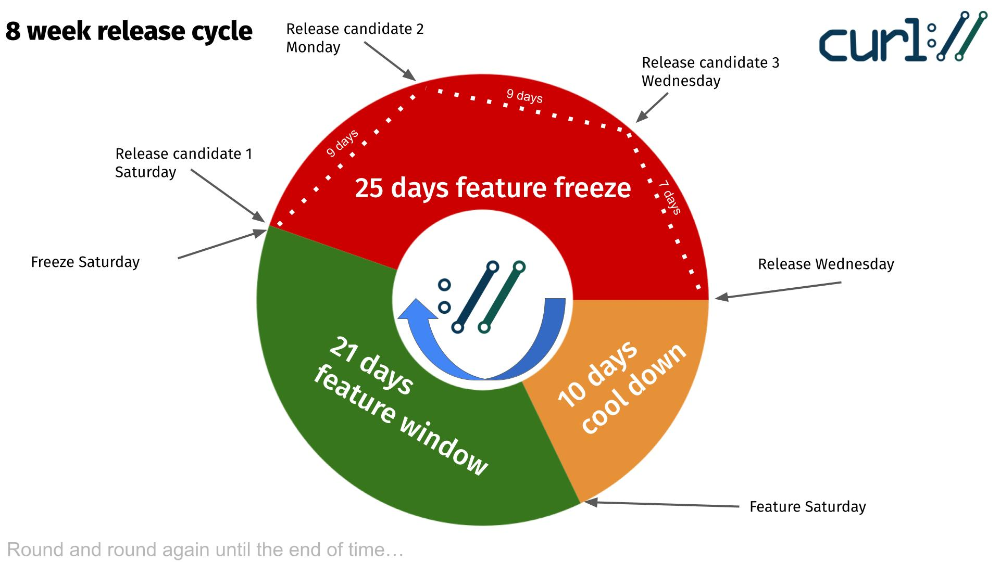

Release candidates are pre-releases that include all features targeted for the pending curl release.
Please try release candidates in your use cases and products and verify that everything works as intended.
Test the new features and options and verify that they work the way they are documented, and maybe also the way you think they should. Features that have not shipped in a release yet can still be marginally tweaked if deemed desirable.
Do not use release candidates in production. They are work in progress. Use them for testing and verification only. Use actual releases in production.
Releases candidates are ephemeral. They are provided only for a few weeks until they are automatically removed. The coming release is scheduled to happen on __NEXTDATE. SUBTITLE(Release candidates)
Each release candidate is provided in four different file formats. They all have the exact same content.
docs/RELEASE-TOOLS.md in the tarball shows the tooling needed to reproduce it. SUBTITLE(Release cycle)
The idea is to provide three release candidates before every release, distributed as displayed in the image below.

Updated: #include "files-date.gen" #include "_footer.html"